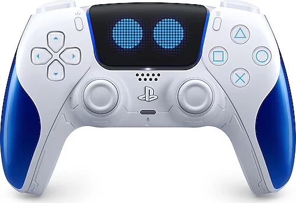
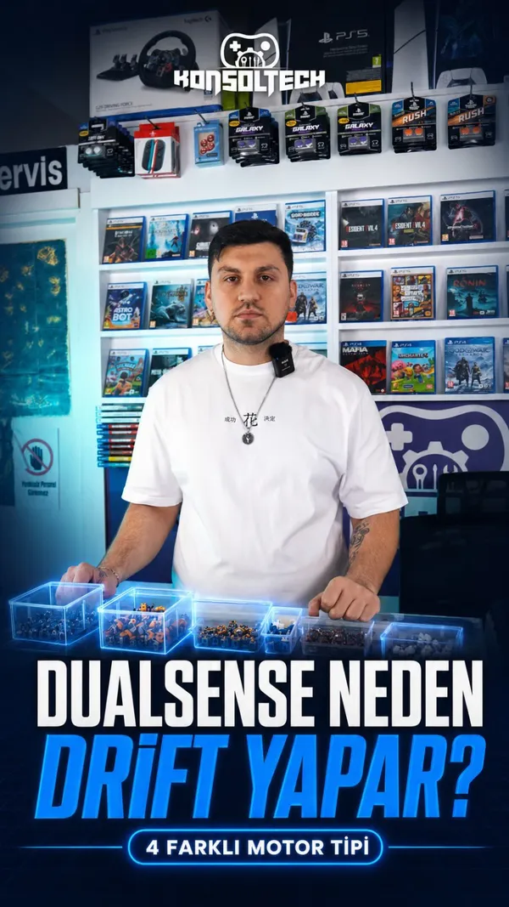
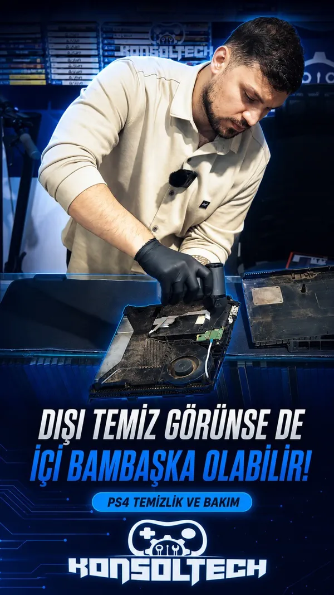

Standart değişim
Orijinal analog motor
Mevcut analog modülün değişimi.
Tek veya çift analog değişimi
3 ay parça garantisi
Paketi inceleBeylikdüzü’ndeki konsol servisin
PlayStation, Xbox ve DualSense tamiri. Arızayı birlikte netleştirelim, fiyatı baştan konuşalım. İstersen uğra, istersen kargoyla gönder.
İşlem ve ücret onayı alınır. Onarım süresi incelemeyle netleşir.

Analoglarını yenile, kasasına yeni bir görünüm kat.
Cihazını ve yaşadığın sorunu seçerek başlayabilirsin.
Orijinal, Hall Effect, TMR ve GuliKit seçeneklerini karşılaştır. Güncel fiyat ve kapsam için modelini WhatsApp’tan paylaş.
Mevcut analog modülün değişimi.
Tek veya çift analog değişimi
3 ay parça garantisi
Paketi inceleManyetik sensöre geçiş.
Tek veya çift analog değişimi
6 ay tam garanti
Paketi inceleTMR sensörlü analog yükseltmesi.
Tek veya çift analog değişimi
6 ay parça garantisi
Paketi inceleİki analog ve iki topuz birlikte.
2 motor + 2 topuz
12 ay tam garanti
Paketi inceleCihaz uyumluluğu, işlem kapsamı ve güncel ücret WhatsApp görüşmesinde netleştirilir.
Türkiye’nin her yerinden kargoyla servis. Bize gönderimde Aras Kargo ücreti bizden.
Dönüş kargosu ve onarım koşulları işlem öncesinde paylaşılır.
Cihaz modelini, arızayı ve istediğin işlemi paylaş. Gönderim ayrıntılarını birlikte netleştirelim.
Kutunun içine ad soyad, telefon, arıza, işlem talebi ve iade adresini yazdığın bir not koy.
Şubeye anlaşma kodunu söyle. Bize gönderimde şubede ücret ödeme. Takip numaranı sakla.
KonsolTech, Yunus Emre Alakaz tarafından kurulan bir oyun ve teknoloji işletmesi. Kolunu teslim ederken de onarım sonrası bir şey sormak istediğinde de aynı telefonlardan bize ulaşabilirsin.
Ne yapılacağını, hangi parçanın değişeceğini ve garanti kapsamını açıkça konuşuyoruz.
KonsolTech’i tanıKendi Instagram hesabımızdan servis anlatımları, bakım ve tasarım paylaşımları.
Diğer videoları görmek için yana kaydır.

Videoyu izle@konsoltekk / Instagram
Standart analog, Hall Effect, TMR ve GuliKit seçenekleri üzerine.
Instagram’da aç
Videoyu izle@konsoltekk / Instagram
Konsol bakımı ve temizlik sürecinden görüntüler.
Instagram’da aç@konsoltekk / Instagram
Kendi hesabımızdan DualSense kasa tasarımı videosu.
Instagram’da açVideoyu açtığında Instagram’a bağlanılır. Görüntüleme, Instagram’ın çerez ve giriş koşullarına bağlı olabilir.
Fiyat, kargo ve garanti hakkında en çok sorulanlar.
Cihaz modelini, sorunu ve varsa tercih ettiğin analog paketini WhatsApp’tan paylaş. Güncel fiyatı ve işlem kapsamını doğrudan iletelim. Gerekli işlem ve ücret onaylandıktan sonra onarıma başlanır.
Bir oyun kolunda sol ve sağ olmak üzere iki analog modül bulunur. Tek motor değişiminde yalnızca bir analog modül yenilenir. İki analog da değişecekse çift motor işlemi uygulanır. Güncel ücret, model ve işlem kapsamıyla birlikte WhatsApp’tan paylaşılır.
Manyetik sensörler, konum ölçümünü temaslı potansiyometrelerden farklı yapar. Ancak mekanik aşınma, darbe, montaj veya kalibrasyon sorunları yine oluşabilir. Hiçbir modül için ömür boyu sıfır drift sözü vermiyoruz.
Evet. Önce WhatsApp’tan cihaz modelini ve arızayı paylaş. Uygun gönderim için Aras Kargo anlaşma kodumuz 2604805651534. Bu kodla bize gönderimde şubede kargo ücreti ödemezsin. Dönüş kargosu ve onarım koşulları ayrıca netleştirilir.
Kolunun veya konsolunun modelini yaz. Yapılacak işi ve ücreti birlikte netleştirelim.